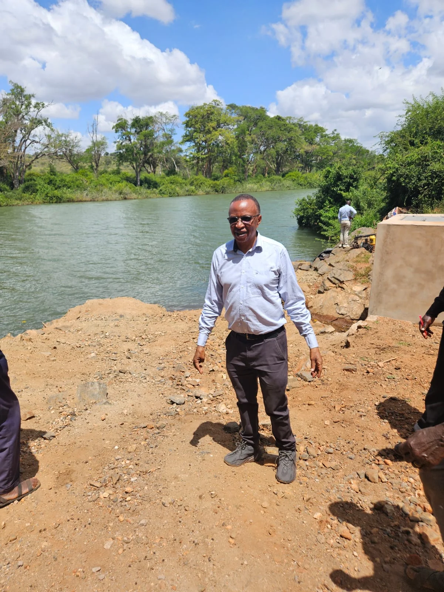
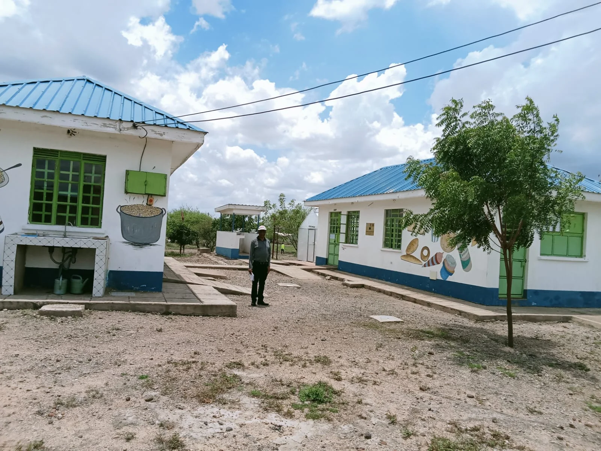
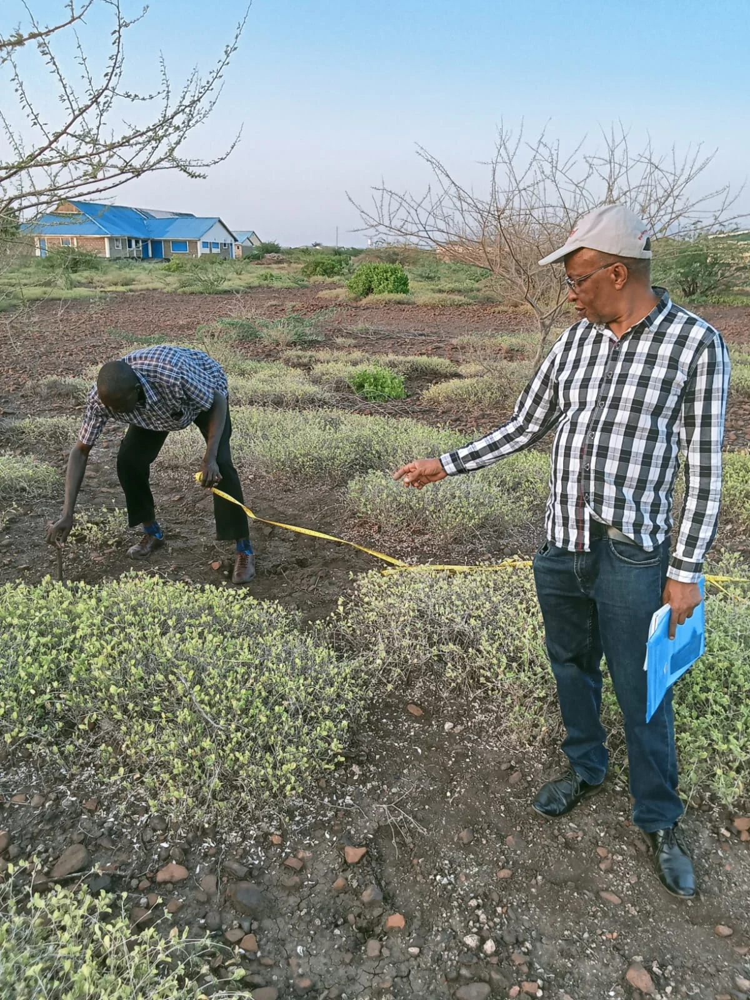
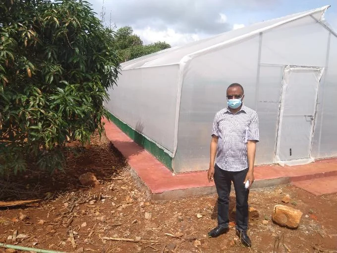

Gallery
People, projects
and practical engineering.
Photographs from work undertaken through ASDARIA or individually by its directors.











Gallery
Photographs from work undertaken through ASDARIA or individually by its directors.



